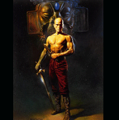

Forums galactiques > Taverne galactique : lieu de discussion informel > un jeu encore
Pages : 1 2 ... 38 39 40 ... 53 54
Thâois 07/01 ETU 18:44 | quel gouté préparé par.... |
Maedhros 07/01 ETU 19:17 | le grand Zorglub (Pareille charlyon,pareille^^) |
El-tibaldo 07/01 ETU 19:18 | Illustre roi de la valée de ... |
Thâois07/01 ETU 19:41 | Moribonne |
charlyon 07/01 ETU 19:54 | (Celle qu'est nourri et qu'est bien bonne !) devenue ainsi moribonne A la suite d'une guerre |
morgane 07/01 ETU 21:37  | contre des orcs baveux |
secretgost 07/01 ETU 22:40 | et les trolls caverneux |
El-tibaldo07/01 ETU 22:53 | Il y a 17 ans de cela... |
Maedhros07/01 ETU 23:01 | quand il etait encore |
morgane07/01 ETU 23:06 | que des petits |
conscrit 08/01 ETU 00:40 | merdeux sans |
| Aldur  08/01 ETU 01:19 | aucun panache |
cortana 08/01 ETU 01:46 | et d'une stupidite profonde... |
n0ne08/01 ETU 03:56 | quant a ses parents |
charlyon08/01 ETU 11:15 | il bouffait les pissenlits par la racine car... |
Maedhros08/01 ETU 11:17 | il reposait six pied sous terre enfin,surtout la tete (Bonjour Charlyon) |
Thâois08/01 ETU 11:17 | car le reste était trop gros |
tsumi 08/01 ETU 11:57 | Les verres de terre ainsi invoqués ... |
charlyon08/01 ETU 11:57 | par la déesse funeste comme la peste .Ils étaient donc à moitié ensevelis sous une épaisse couche de fumier (bijou bikou meadhros) |
tsumi08/01 ETU 12:00 | C'est pourquoi Zorglub les a déterré. Alors.. (histoire de revenir sur les sujet) |
Pages : 1 2 ... 38 39 40 ... 53 54
Forums galactiques > Taverne galactique : lieu de discussion informel > un jeu encore